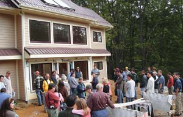

Everyone wants lower energy bills, but where do you start? The National Solar Tour, an exposition of green homes, schools and businesses, is a great way to get inspired, get ideas and learn about green building. This fall, American Solar Energy Society (ASES) chapters and other organizations around the country will kick off the 11th annual tour, showcasing nearly 4,000 buildings featuring green design elements, such as natural lighting, solar electricity and water heating, passive solar heating and cooling, Energy Star appliances and more.
When ASES launched the tour in 1996, it was relatively small - only about 5,000 guests attended to view about 400 buildings nationwide. But 2006 is shaping up to be a much different story: This year, tour organizers expect more than 90,000 guests to join the tour before it ends in November.
Mike DiGrazia, manager of the National Solar Tour, attributes its explosive growth over the years to the rising public interest in alternative energy, energy conservation and green building. “The tide is changing,” DiGrazia says. “People are becoming aware of global warming and rising energy costs. People are becoming concerned.” The tour, he says, “is a tremendous vehicle for educating the public. We want to reach people with a message of what they can do right here, right now.”
The owners of the green homes and businesses on the tour are average members of the local community, something DiGrazia says works to the tour’s advantage. “People go not knowing what’s available and leave with an ‘aha!’ moment,” he says. When visitors see that their neighbors are already well on the way to home energy independence, he says, it makes the goal seem attainable. In fact, a survey during last year’s tour found that 54 percent of guests had already planned to incorporate some green building techniques into their own homes before they attended the tour, but a whopping 78 percent planned to do so after seeing examples firsthand.
To locate the tour nearest you, go to www.ases.org/tour/2006_tour/listings.htm. The list is organized by state and updated as more tours are scheduled. Most tours will be held October 7, but some are as early as September and others as late as November.
|
 MATT SANDS 2005 National Solar Tour participants learn about green design firsthand, at this passive solar, Energy Star home in Blowing Rock, N.C. |
|
|